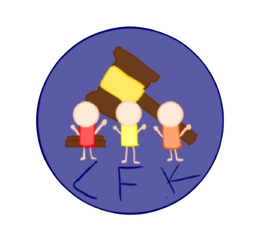

An Israeli father and English mother married in 1991 and had three children in Israel. Four years later, the mother took the children to England without his consent. Bound by Jewish law, he first pursued the rabbinical court, which the mother ignored for six months before he turned to the Hague Convention. The trial court found no acquiescence; the Court of Appeal disagreed.
The mother argued the father showed no clear evidence of seeking the children's return through the rabbinical court, and that his offer to return them after a Passover visit was itself inconsistent with wanting immediate return — amounting to acquiescence. The father argued he never consented to their removal, remained anxious for their return throughout, and that the Passover request was simply a wish to see his children.
The House of Lords ruled in favor of the father, holding that acquiescence depends entirely on the parent's actual intention, not merely an assessment of their actions. The Lords also held that pursuing religious arbitration and negotiation to secure a child's return does not amount to accepting their permanent relocation.
The court ordered the immediate return of the children to Israel with their father. This landmark decision protected the role of religious arbitration in family disputes, and it raised the bar for the acquiescence defense: a left-behind parent must now show genuine acceptance of the children remaining abroad, not just the passage of time.
Year: 1997
Court: House of Lords
Legal Area: Family Law (International Child Abduction)
Key Principle: Acquiescence Requires Actual Intention
Outcome: Father won; children ordered returned to Israel